교통기사 (2010-03-07 기출문제)
1과목: 교통계획
1. 다음 중 4단계 교통수요추정방법에 대한 설명으로 옳지 않은 것은?
- 계획가나 분석가의 주관이 작용할 때도 있다.
- 총체적 자료에 의존하기 때문에 통행지의 총체적ㆍ평가적 특성만 산출될 될 뿐 행태적 측면은 거의 무시된다.
- 현재의 교통 여건을 지배하고 있는 교통체계의 메커니즘이 장래에는 변한다고 가정한다.
- 통행발생, 통행분포, 수단분담, 통행배정의 4단계로 나누어 순차적으로 교통수요를 추정한다.
(정답률: 94%)

2. 각 개인의 통행시간을 같게 하는 이용자 평형배분(user equilibrium)방법과 총 통행 시간을 같게 하는 체계평행배분(system equilibrium)방법을 이용한 경우 통행배분결과가 달라지는 것을 무엇이라 하는가?
- Lewis's Paradox
- Braess's Paradox
- Tom's Paradox
- Traffic wave
(정답률: 86%)
3. 시내 백화점들의 주차특성을 조사한 결과 주차발생 원단위가 5.24(대/1000m2/h), 주차이용효율이 80%, 신축 후 주차대수의 연평균증가율이 5ㄲ%로 나타났다. 신축예정인 어느 백화점의 건물연면적이 45000m2일 때 목표연도(10년 후)의 주차수요는?
- 약 290대
- 약 370대
- 약 480대
- 약 530대
(정답률: 87%)
4. 다음 중 교통의 기능에 대한 설명으로 옳지 않은 것은?
- 승객과 화물을 일정한 시간에 목적지까지 운송시킨다.
- 도시화를 촉진시키고, 대도시와 주변도시를 유기적으로 연결시켜 준다.
- 산업활동의 생산성과 생산비를 높이는데 기여한다.
- 문화ㆍ사회활동 및 교육 등의 활동을 수행하는데에 이동성을 부여한다.
(정답률: 85%)
5. 다음 중 다승객차량인 버스에 통행우선권을 부여하여 버스 통행로를 개선하기 위한 정책으로 거리가 먼 것은?
- 버스우선차로
- 버스전용차로
- 버스우선신호
- 버스정보시스템
(정답률: 86%)
6. 다음의 설명에 해당하는 보행자시설의 효과척도는?
- 보행교통류율
- 보행점유공간
- 보행자 평균지체
- 보행자 유효보도폭
(정답률: 100%)
7. 다음 통행배분(Trip Assignment)단계에서 사용하는 모형 중 링크의 용량을 고려하지 않는 것은?
- 다중경로배분법
- 분할배분법
- All-or-Nothing법
- 반복과정법
(정답률: 100%)
8. 다음 중 폐쇄선의 설정시 고려할 사항으로 옳지 않은 것은?
- 가급적 폐쇄선은 행정구역 경계선과 일치시킨다.
- 위성도시나 장래 도시화지역 등은 가급적 폐쇄선 내에 포함시키지 않는다.
- 폐쇄선을 횡단하는 도로나 철도 등은 최소화시킨다.
- 주변에 동이 위치하면 폐쇄선 내에 포함시킨다.
(정답률: 96%)
9. 교통수요 예측모형 중 추상수단모형(abstract mode model)에 대한 설명으로 옳은 것은?
- 인구수, 고용수준과 같은 사회적 조건에 따른 교통수단의 수요를 추정하는 방법이다.
- 제공되는 교통서비스의 속성에 따른 최적수단을 선택하여 수요를 추정하는 방법이다.
- 지하철, 버스, 승용차와 같은 구체적인 교통수단의 수요를 추정하는 방법이다.
- 교통수단을 차체의 중량과 엔진배기량에 따라 구분하고 이에 따른 수요를 추정하는 방법이다.
(정답률: 79%)
10. 다음 중 통행발생(Trip Generation) 단계에서 사용하는 모형에 해당하지 않는 것은?
- 카테고리분석법
- 디트로이트법
- 원단위법
- 회귀분석법
(정답률: 80%)
11. 다음 중 내부수익률(IRR)을 이용한 경제성 분석법에 대한 설명으로 옳은 것은?
- 다른 대안과의 사업성을 비교하기 어렵다.
- 해당 사업의 수익성을 측정할 수 없다.
- 평가과정과 결과를 이해하기 어렵다.
- 사업의 절대적인 규모를 고려하지 못한다.
(정답률: 100%)
12. 다음 중 개별행태모형(disaggregate behavioral model)에 대한 설명으로 옳지 않은 것은?
- 개인의 통행특성자료에 근거해서 교통수요를 추정한다.
- 확률적 효용이론에 근거한다.
- 종속변수는 통행량이며 독립변수는 존의 사회경제지표다.
- 개인의 행태를 반영하기 때문에 공간적ㆍ시간적으로 영향을 받지 않는다.
(정답률: 94%)
13. 다음 중 ITS(Intelligent Transportation Systems)의 목적 및 개발배경으로 옳지 않은 것은?
- 도로이용의 효율성을 제고하기 위하여
- 도로의 교통안전을 도모하기 위하여
- 저공해ㆍ무인운전차량 등 새로운 교통기술의 개발 및 보급을 위하여
- 통행 발생량과 도착량을 정확하게 예측하기 위하여
(정답률: 84%)
14. 요금수준, 서비스의 질과 양 등 교통체계의 변수 변화에 따른 승객 교통량을 상대적으로 추정할 수 있는 개략적인 측정 수단으로 보편적으로 널리 이용되고 있는 방법은?
- 공급탄력성법
- 수요탄력성법
- 공급형평성법
- 승객편리성법
(정답률: 100%)
15. 다음 중 구체적인 목적을 가진 공간상의 일방향 움직임으로 승객이나 화물이 목적지에서의 활동을 위해 출발지에서 출발하여 목적지에 도달하는 행위의 한 단위를 의미하는 것은?
- 교통량(volume)
- 통행(trip)
- 교통(transportation)
- 통행량(travel)
(정답률: 90%)
16. 다음의 교통수요 추정방법 중 직접수요추정모형(Direct demand model)에 해당하지 않는 것은?
- Baumol-Quandt 모형
- McLynn 모형
- Kraft-SARC 모형
- Wilson 모형
(정답률: 85%)
17. 아래와 같은 특징을 갖는 대중교통 요금구조는?
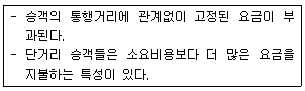
- 구역요금제
- 균일요금제
- 구간요금제
- 거리요금제
(정답률: 100%)
18. 다음 중 장ㆍ단기 교통계획에 대한 설명으로 옳은 것은?
- 단기교통계획은 자본집약적이고 장기교통계획은 저자본 비용을 추구한다.
- 단기교통계획은 소수의 대안을 추구하고 장기교통계획은 다수의 대안을 추구한다.
- 단기교통계획은 서비스지향적이고 장기교통계획은 시설지향적이다.
- 단기교통계획은 교통수요가 비교적 고정된 경우, 장기 교통계획은 교통수요가 변화 가능한 경우에 적용한다.
(정답률: 96%)
19. 서울시 상계동 지역의 한 주민이 옷을 사기 위해 동대문 시장으로 갈 때 버스와 지하철의 선택확률을 구하고자 이항로짓(Logit)모형을 적용하고자 한다. 각 수단의 효용함수값은 버스가 -0.670, 지하철이 -0.870일 때 버스를 선택할 확률은 얼마인가?
- 약 43.5%
- 약 45.0%
- 약 55.0%
- 약 56.5%
(정답률: 47%)
20. 다음과 같은 교통수요모형에서 지하철 통행비용에 대한 택시교통 수요의 교차탄력성은 얼마인가?
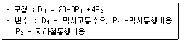
- (-3)+4P2
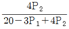
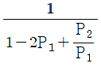
- 4
(정답률: 65%)
2과목: 교통공학
21. 아래 그림에 해당하는 교통량-밀도-속도 모형에 대한 설명으로 옳은 것은?
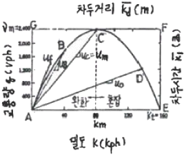
- 차두시간(초)의 최소점은 F이다.
- 자유속도는 A점과 C점을 연결하는 기울기다.
- A점 밀도는 교통신호에 의하여 정지된 상태의 밀도를 나타낸다.
- 차두거리(m)의 최소점은 G점이다.
(정답률: 70%)
22. 다음 중 신호교차로의 용량분석에서 포화도(Degree of Saturation)를 나타내는 식으로 옳은 것은? (단, C : 주기의 길이, U : 교통수요, S : 포화교통류율, g : 유효녹색시간)
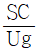
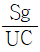
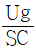
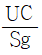
(정답률: 72%)
23. 아래의 설명에 해당하는 서비스수준은?
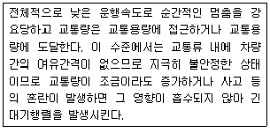
- B
- C
- D
- E
(정답률: 54%)
24. 다음 중 운영방식에 따른 비신호교차로의 종류에 해당하지 않는 것은?
- 무통제 교차로
- 양방향정지 교차로
- 일방향정지 교차로
- 로터리식 교차로
(정답률: 50%)
25. 다음 중 고속도로 엇갈림 구간(Weaving Area)의 교통류 특성에 영향을 미치는 도로 기하구조 요소에 해당하지 않는 것은?
- 엇갈림구간의 길이
- 엇갈림구간의 형태
- 엇갈림구간의 폭
- 엇갈림구간의 설계속도
(정답률: 80%)
26. 3현시로 운영되는 신호교차로의 교통량 및 포화교통류율이 아래와 같을 때 Webster방법에 의한 최적신호주기는? (단, 각 현시별 총 손실시간은 3초이며 계산한 신호주기를 5초 단위로 올림한다.
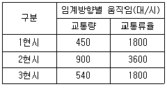
- 90초
- 95초
- 100초
- 1⑤초
(정답률: 65%)
27. 임의도착 교통류에서 도착교통량이 시간당 1200대일 경우 1분 동안 20대가 도착할 확률은 얼마인가?
- 약 0.030
- 약 0.⑤9
- 약 0.089
- 약 0.018
(정답률: 20%)
28. 다음 중 독립 신호교차로에 유입되는 교통량의 변화가 심하고 시간별 변동 패턴이 다를 때 가장 적합한 신호제어방식은?
- 감응제어
- 정주기제어
- 연동제어
- 고정식제어
(정답률: 95%)
29. 다음 중 신호교차로의 포화교통량 산정을 위한 이상적인 조건 기준으로 옳지 않은 것은?
- 차로폭 3.0m 이상
- 교통류는 모두 승용차로 구성
- 경사가 없는 접근부
- 접근부 정지선 상류부 100m 이내에 버스정류장이 없음
(정답률: 85%)
30. 정상시력의 운전자(시력 1.0)가. 140m의 거리에서 교통표지를 볼 수 있다면, 글자의 크기를 2배로 하였을 때 0.5의 시력을 가진 운전자가 교통표지를 보기 위하여 필요한 거리는 얼마인가?
- 70m
- 140m
- 280m
- 560m
(정답률: 85%)
31. 30m/sec의 속도로 주행하던 차량이 장매울을 발견하고 2m/sec2으로 감속하여 정지하였을 때 정지거리는 얼마인가? (단, 운전자의 반응시간은 2초이다.)
- 60m
- 225m
- 285m
- 510m
(정답률: 30%)
32. 다음 중 속도조사시 유의사항으로 옳지 않은 것은?
- 장비와 관찰자는 운전자에게 보이는 것이 좋다.
- 가능하면 충분한 수의 표본을 수집하도록 한다.
- 속도를 현장에서 측정하는 방법은 조사인력과 시간 및 교통류의 방해 여부를 고려해서 결정하여야 한다.
- 표본추출시 표본의 임의성을 확보하도록 하여야 한다.
(정답률: 96%)
33. 속도(u)와 밀도(k)의 관계가 u=52.4-0.24k일 때 최대교통량(Qmax)은 얼마인가?
- 약 2584대
- 약 2687대
- 약 2769대
- 약 2860대
(정답률: 64%)
34. 다음 중 속도와 교통량에 대한 설명으로 옳지 않은 것은?
- 도로의 일정구간을 달리는 차량들의 평균속도를 구간거리를 고려하여 산출하는 것을 공간평균속도라고 한다.
- 교통의 흐름이 전혀 변화하지 않는 경우를 제외하고 공간평균속도는 항상 시간평균속도보다 높은 값을 나타낸다.
- 교통량은 단위시간당 도로의 한 지점 또는 한 구간을 통과한 차량대수로 나타낼 수 있다.
- 한 교통류 내에서 속도의 분산이 크다는 것은 교통류 내 각 차량들의 속도의 변화가 크다는 것을 의미한다.
(정답률: 95%)
35. 다음 중 PHF(Peak Hour Factor)에 대한 설명으로 옳지 않은 것은?
- 첨두시간내에서의 교통량의 변동 정도를 알 수 있다.
- 보통 1보다 큰 값을 가진다.
- 교통류 분석시간단위가 15분보다 짧으면 PHF는 적어진다.
- 교통류 분석시간단위가 15분보다 짧으면 교통시설의 규모를 경정하는 때에 과도설계가 될 가능성이 있다.
(정답률: 94%)
36. 다음 중 아래와 같은 특징을 갖는 속도-밀도 모형은?
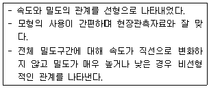
- Pipes 모형
- Greenburg 모형
- Greenshield 모형
- Edie 모형
(정답률: 100%)
37. 다음 중 일련의 신호교차로에서의 교통흐름을 나타내는 시공도(time-space diagram)에서 관측할 수 있는 것으로만 나열한 것은?
- 차량진행대폭(bandwidth), 차량통행시간(travel time), 신호옵셋(offset)
- 차량통행시간(travel time), 신호옵셋(offset), 차량유지속도(free-flow spped)
- 신호옵셋(offset), 차량유지속도(free-flow spped), 차량진행대폭(bandwidth)
- 차량유지속도(free-flow spped),차량진행대폭(bandwidth), 차량통행시간(travel time)
(정답률: 93%)
38. 다음 중 교통류를 설명하는 세 가지 변수에 해당하지 않는 것은?
- 속도
- 밀도
- 차두시간
- 교통량
(정답률: 73%)
39. 다음 중 속도누적분포에서 일반적으로 교통류 내에서의 합리적인 속도의 최대값을 나타내어 현장의 도로조건에 적합한 교통운영계획을 세우는데 기준으로 삼는 속도는?
- 100% 속도
- 85% 속도
- 50% 속도
- 25% 속도
(정답률: 95%)
40. 연속된 교차로에서 첫 번째 신호등의 녹색신호 시작 시간과 두 번째 신호등의 녹색신호 시작 시간과의 시간 간격을 무엇이라고 하는가?
- 옵셋
- 유효녹색시간
- 현시
- 주기
(정답률: 95%)
3과목: 교통시설
41. 길어깨의 기능 및 필요성에 대한 설명이 옳지 않은 것은?
- 유지가 잘 되어있는 길어깨는 도로의 미관을 높인다.
- 고장차가 본선 차도로부터 대피할 수 있어 사고시 교통의 혼잡을 방지하는 역할을 한다.
- 곡선부에서는 시거가 증대되어 교통의 안전성이 높다.
- 오르막길에서 오르막차로로 이용하여 교통용량을 일시적으로 증대시킨다.
(정답률: 59%)
42. 도로의 계획목표연도와 관련하여 아래의 ()에 들어갈 말이 옳은 것은?
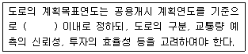
- 20년
- 15년
- 10년
- 5년
(정답률: 67%)
43. 다음 중 기본 차로수가 균형 상태이면서 차로수 균형의 원칙을 지키고 있는 설계는?
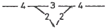
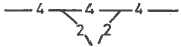
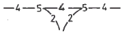
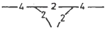
(정답률: 85%)
44. 아래 그림과 같은 연결로의 형식에 대한 설명으로 옳은 것은?
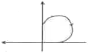
- 우회전 연결로의 기본형식인 루프(Loop) 연결로이다.
- 새로운 입체교차구조물을 설치하여야 접속이 가능하다.
- 이용교통량이 많은 곳에 적합하며, 원곡선 반경에 제약이 적어 주행에 필요한 안전한 속도를 유도할 수 있다.
- 원하는 진행방향에 대하여 부자연스러운 주행궤적을 그리므로 운전자가 혼돈할 우려가 있다.
(정답률: 59%)
45. 도로의 평면선형 설계 시 고려할 사항과 거리가 먼 것은?
- 자동차의 주행 시 주행역학적인 측면에서 안전성과 쾌적성을 유지할 수 있도록 한다.
- 운전자의 시각 및 심리적인 측면에서 보아 양호하도록 설계한다.
- 도로 및 주위경관과 조화를 이루도록 한다.
- 자연적 조건, 기존 지형보다는 설계속도를 높일 수 있도록 지형을 평탄하게 설계한다.
(정답률: 95%)
46. 설계속도가 100km/h인 고속도로의 최대종단경사 기준은? (단, 지형은 평지이며 소형차도로인 경우는 고려하지 않음)
- 3%
- 4%
- 5%
- 6%
(정답률: 59%)
47. 도로의 횡단면 구성을 정하는데 있어서 고려할 사항으로 옳은 것은?
- 설계속도가 높고, 계획교통량이 많은 노선에 대해서는 낮은 규격의 횡단구성요소를 갖추도록 한다.
- 당해연도의 교통수요에 적응할 수 있는 교통처리 능력을 갖추도록 한다.
- 교통상황과 상관없이 자전거 및 보행자 도로를 분리한다.
- 도로의 횡단구성 표준화를 도모하여 도로의 유지관리 기능을 확보한다.
(정답률: 60%)
48. 다음 중 일반도로의 기능별 구분에 상응하는 도로법에 따른 도로의 종류가 잘못 연결된 것은?
- 주간선도로-일반국도
- 보조간선도로-일반국도
- 집산도로-지방도, 시도
- 국지도로-지방도, 시도
(정답률: 75%)
49. 각 도로의 접근성과 이동성의 관계를 나타낸 아래 그림에서 ①~④에 해당하는 기능별 도로의 종류가 모두 옳은 것은? (단, : 접근성, : 이동성)
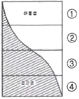
- ①고속도로 ②국지도로 ③간선도로 ④ 집산도로
- ①고속도로 ②간선도로 ③집산도로 ④ 국지도로
- ①국지도로 ②집산도로 ③고속도로 ④ 간선도로
- ①국지도로 ②집산도로 ③간선도로 ④ 고속도로
(정답률: 95%)
50. 오르막차로의 설치기준에 대한 설명으로 옳은 것은?
- 종단경ㅅ가 있는 구간에서 설계속도가 시속 40km 이하인 경우에는 오르막차로를 설치하지 아니할 수 있다.
- 오르막차로의 폭은 본선 차로폭의 1.5배가 되도록 설치하여야 한다.
- 오르막차로를 주행차로에 변이구간으로 접속시키는 경우 시정부 변이구간은 설계속도에 따라 변이율을 1/10 ~ 1/15사이로 한다.
- 오르막차로를 주행차로에 변이구가ᅟᅣᆫ으로 접속시키는 경우 종점부 변이구간은 설계속도에 따라 변이율을 1/25 ~ 1/30 사이로 한다.
(정답률: 96%)
51. 평면곡선부에서 곡선반경이 250m, 편경사가 3%, 횡방향 마찰계수가 0.12인 원곡선 구간의 최대안전속도는?
- 약 59kph
- 약 69kph
- 약 77kph
- 약 87kph
(정답률: 67%)
52. 설계기준자동차 중 대형자동차의 길이(기준)는 얼마인가?
- 6.5m
- 11.2m
- 13.0m
- 16.7m
(정답률: 100%)
53. 도시지역의 일반도로에 주정차대를 설치하는 경우에는 그 폭이 최소 얼마 이상이 되도록 하여야 하는가? (단, 조형자동차를 대상으로 하는 경우는 고려하지 않음)
- 1.5m 이상
- 2.0m 이상
- 2.5m 이상
- 3.0m 이상
(정답률: 70%)
54. 완화곡선(클로소이드 곡선)에서 속도가 일정할 때 원심가속도의 변화율과 파라메타의 관계를 옳게 설명한 것은?
- 원심 가속도 변화율에 상관없이 파라메타는 일정하다.
- 원심 가속도 변화율이 커지면 파라메타도 커진다.
- 원심 가속도 변화율이 커지면 파라메타는 작아진다.
- 원심 가속도 변화율에 상관없이 파라메타는 커지기도하고, 작아지기도 한다.
(정답률: 60%)
55. 도로의 평면 선형을 아래 그림과 같이 구성하고, 완화곡선을 클로소이드곡선으로 적용할 경우, 완화곡선의 길이가 100m, 원곡선부의 반경이 400m라면 직선부와의 교점에서 완화곡선상의 50m 떨어진 지점의 곡선반경은?
- 800m
- 700m
- 633m
- 600m
(정답률: 50%)
56. 도시지역 도속도로와 일반도로에 설치하는 중앙분리대의 최소폭 기준은?
- 고속도로 2.0m 이상, 일반도로 1.0m 이상
- 고속도로 2.0m 이상, 일반도로 1.5m 이상
- 고속도로 2.5m 이상, 일반도로 1.5m 이상
- 고속도로 3.0m 이상, 일반도로 1.5m 이상
(정답률: 74%)
57. 길이 1,000m 이상의 터널 또는 지하타도에서 오른쪽 길어깨의 폭을 2m 미만으로 하는 경우에는 최소 얼마의 간격으로 비상주차대를 설치하여야 하는가?
- 1,000m
- 750m
- 500m
- 250m
(정답률: 95%)
58. 다음 중 시선유도시설에 대한 설명으로 옳지 않은 것은?
- 시선유도표지는 평면곡선반경이 작은 구간의 시거가 불량한 장소에 갈매기 기호의 표지판을 설치하여 운전자의 안전주행을 도모하는 시선유도시설이다.
- 시선유도시설은 도로 끝 및 도로 선형을 명시하여 주간 및 야간에 운전자의 시선을 유도하기 위하여 설치한다.
- 평면곡선부에서는 시각적으로 일정한 간격으로 시선유도표지가 보이도록 평면곡선반경에 따라 표준설치간격을 달리한다.
- 반사체가 최적의 효과를 발휘할 수 있도록 설치한다.
(정답률: 79%)
59. 차량용 방호울타리 중, 적당한 감성과 인성을 가져 차량충돌 시 소성(塑性) 변형은 크나 파손 부분의 대체가 쉽고, 설치 장소에 따라서는 시선 유도의 효과가 있는 것은?
- 가드레일(guard rall)
- 가드파이프(guard pipe)
- 박스(box)형 보
- 가드케이블(guard cable)
(정답률: 83%)
60. 입체교차의 설계 시 유출입 유형을 일관성있게 계획할 때의 장점으로 가장 거리가 먼 것은?
- 차로변경을 줄인다.
- 직진교통과의 마찰을 줄인다.
- 과속운전을 줄인다.
- 운전자의 혼란을 줄인다.
(정답률: 69%)
4과목: 도시계획개론
61. 주택재개발사업에 대한 설명으로 옳은 것은?
- 도시저소득주민이 집단으로 거주하는 지역으로서 정비기반시설이 극히 열악하고 노후ㆍ불량건축물이 과도하게 밀집한 지역에서 주거환경을 개선하기 위하여 시행하는 사업
- 정비기반시설이 열악하고 노후ㆍ불량건축물이 밀집한 지역에서 주거환경을 개선하기 위하여 시행하는 사업
- 정비기반시설은 양호하나 노후ㆍ불량건축물이 밀집한 지역에서 주거환경을 개선하기 위하여 시행하는 사업
- 토지의 효율적 이용과 도심 또는 부도심 등 도시기능의 회복이나 상권활성화 등이 필요한 지역에서 도시환경을 개선하기 위하여 시행하는 사업
(정답률: 42%)
62. 다음 중 도시관리계획결정으로 세분하여 지정되는 용도지역에 해당하지 않는 것은?
- 준공업지역
- 근린상업지역
- 노선상업지역
- 보전녹지지역
(정답률: 47%)
63. 래드번(Radburn)계획에 대한 설명으로 옳지 않은 것은?
- 주거지 내의 통과교통을 허용하며 도로는 목적별로 특정도로를 설치하였다.
- 12~20ha 규모의 슈퍼블록을 채택하였다.
- 주택들은 쿨데삭(cul-de-sac)에 의해 연결되었다.
- 어린이들이 큰 도로를 횡단하지 않고 안전하게 학교, 수영장, 공원 등의 공공시설에 갈 수 있도록 하였다.
(정답률: 45%)
64. 다음 중 하워드(E. Howawd)가 제시한 전원도시(garden city)에 대한 설명으로 옳지 않은 것은?
- 인구는 3만~5만 정도의 소규모로 제한한다.
- 전원적 성격을 유지하기 위하여 공업기능을 배제한다.
- 토지 투기를 막기 위하여 토지는 공유화한다.
- 도시주위에 넓은 농업지대를 확보하여야 한다.
(정답률: 47%)
65. 지리적ㆍ공간적 차원으로서 인간정주사회의 최소 단위인 하나의 인간에서 출발하여 15단계의 공간단위로 분류한 학자는?
- 게데스(Patrick Geddes)
- 독시아디스(C. A. Doxiadis)
- 케빈린치(Kevin Lynch)
- 레이먼드 언윈(Raymond Unwin)
(정답률: 47%)
66. 도시 및 지역경제 분석 방법 중 경제기반모형(economic base model)에 대한 설명으로 옳지 않은 것은?
- 단순하고 이해하기 쉬워 모형의 적용이 용이한 편이다.
- 분석에 필요한 자료의 구독이 매우 어렵다.
- 모형을 이용한 지역분석에서 가정하는 내용들에 한계가 있다.
- 지역의 성장이 지역에서 생산되는 재화의 외부 수요에 의해 결정된다는 것에 기초한다.
(정답률: 60%)
67. 용도지역별 도로율 최소 기준이 가장 높은 것은?
- 주거지역
- 상업지역
- 공업지역
- 녹지지역
(정답률: 53%)
68. 도시계획시설로서 보행자전용도로의 최소 폭원 기준은?
- 1m 이상
- 1.5m 이상
- 2m 이상
- 2.5m 이상
(정답률: 53%)
69. 도시기본계획의 목표연도는 계획수립시점으로부터 얼마를 기준으로 하는가?
- 5년
- 10년
- 20년
- 30년
(정답률: 39%)
70. 다음 중 르꼬르뷔제가 주장한 「도시계획 4원칙」과 가장 거리가 먼 것은?
- 도시 중심지구의 과밀을 완화하여 혼잡을 구제할 것
- 거주밀도를 낮출 것
- 교통기관을 도시에 집중시켜 교통수단을 늘릴 것
- 수목면적을 넓혀 충분한 공지와 공원을 확보할 것
(정답률: 34%)
71. 다음 중 도시내부공간구조의 진화과정을 설명하는 이론과 특성의 연결이 옳지 않은 것은?
- 선형이론-교통축
- 동심원이론-단핵구조
- 다핵이론-부도심
- 중심지이론-시장원리
(정답률: 54%)
72. 국토의 계획 및 이용에 관한 법률에 따른 기반시설 중 공간시설에 해당하지 않는 것은?
- 유원지
- 광장
- 시장
- 공공공지
(정답률: 44%)
73. 어느 주택단지의 순인구밀도가 120인/ha, 주택용지률이 90%일 때 총인구밀도는 얼마인가?
- 75인/ha
- 90인/ha
- 108인/ha
- 120인/ha
(정답률: 73%)
74. 현대의 신도시계획, 지형이 평탄한 도시에 많이 사용되며 부정형한 토지가 적어 토지 이용에는 유리하나 광범위하게 적용하면 획일화되어 단조로울 수 있는 가로망 형태는?
- 방사형
- 방사환상형
- 격자형
- 환상형
(정답률: 73%)
75. 다음 중 생활권 계획에 대한 설명으로 옳지 않은 것은?
- 일반적으로 생활권 위계는 도시의 규모와 서비스 수준등에 의한 각종 생활편익시설의 종류와 규모에 따라 나누어진다.
- 1차 생활권은 주로 자동차로 가까이 이동할 수 있는 범위로 초등학교 및 중학교 1개가 유지되는 규모다.
- 2차 생활권은 보통 중ㆍ고등학교의 통학권 정도의 규모로, 지역 중심지로서의 역할을 담당하도록 한다.
- 3차 생활권은 대도시 규모의 생활권으로 하나의 완결된 공간적 체계이며, 하나의 도시에서 필요한 모든 시설이 입지한다.
(정답률: 34%)
76. 도시관리계획결정의 고시가 있을 때에 지적이 표시된 지형도에 도시관리계획사항을 명시한 도면을 작성하는 축척기준으로 옳은 것은? (단, 녹지지역안의 임야, 관리지역, 농립지역 및 자연환경보전지역의 경우는 고려하지 않음)
- 축척 500분의 1 내지 1,500분의 1
- 축척 1,500분의 1 내지 3,000분의 1
- 축척 3,000분의 1 내지 4,500분의 1
- 축척 3,000분의 1 내지 6,000분의 1
(정답률: 55%)
77. 기능에 따른 도로의 종류와 배치간격에 대한 설명이 옳지 않은 것은?
- 주간선도로와 주간선도로의 간격 : 1,000m 내외
- 주간선도로와 보조간선도로의 간격 : 500m 내외
- 주간선도로와 집산도로의 간격 : 250m 내외
- 국지도로간의 간격 : 장변 200~250m 내외, 단변 120~150m 내외
(정답률: 36%)
78. 도시토지이용의 예측 모형인 라우리모형(Lowry Model)에서 공간주조를 분류하는 항목에 해당되지 않는 것은?
- 기반부문(Basic Sector)
- 서비스부문(Service Sector)
- 가계부문(Household Sector)
- 환경부문(Environmental Sector)
(정답률: 65%)
79. 독특한 자연경관이나 역사적 건물의 보전이라는 시대적 요청에 따라 보전에 의햐 수반되는 토지소유자에 대한 보상 문제의 해결방안으로 대두된 제도는?
- TDR(Transfer of Development Rights)
- SDC(Sub-Division Control)
- PUD(Planned Unit Developmrnt)
- ZUD(Zoning Unit Developmrnt)
(정답률: 63%)
80. 다음 중 토지이용과 교통의 관계에 대한 설명으로 옳지 않은 것은?
- 토지이용과 교통은 상호의존적으로 작용하며 순환적인 관계를 가지고 있다.
- 교통발생량은 토지이용의 용도배분에 따라 다르다.
- 토지이용체계의 변화는 정태적이기 때문에 교통의 토지이용에 대한 영향을 떼내어 관찰하기 용이하다.
- 토지이용이 집약적인 경우 교통시설의 양은 증가한다.
(정답률: 56%)
5과목: 교통관계법규
81. 다음 중 도로교통법상 차마의 교통을 원활하게 하기 위하여 필요한 경우 도로에 행정안전부령이 정하는 차로를 설치할 수 있는 자는?
- 지방경찰청장
- 도지사
- 군수
- 경찰서장
(정답률: 63%)
82. 다음 중 도로 구조의 손궤 방지, 미관 보존 또는 교통에 대한 위험을 방지하기 위하여 도로경계선으로부터 20m를 초과하지 아니하는 범위에서 대통령령으로 정하는 바에 따라 관리청이 지정할 수 있는 것은?
- 접도구역
- 연도구역
- 보존구역
- 풍치구역
(정답률: 64%)
83. 다음 중 도로교통법상 주차금지 장소 기준으로 옳지 않은 것은?
- 도로공사를 하고 있는 경우 그 공사구역의 양쪽 가장자리로부터 5m 이내의 곳
- 터널 안 및 다리 위
- 화재경보기로부터 3m 이내의 곳
- 소화용방화물통의 흡수구나 흡수관을 넣는 구멍으로부터 3m 이내의 곳
(정답률: 32%)
84. 도로교통법상 차량 신호등이 표시하는 신호의 종류와 그 뜻이 모두 옳은 것은?
- 녹색의 등화-차마는 다른 교통에 우선하여 우회전을 할 수 있고 보행자의 횡단을 방해하지 못한다.
- 황색의 등화-보행자는 주의하면서 횡단할 수 있다.
- 황색등화의 점멸-차마는 정지선이나 횡단보도 직진에 일시정지한 후 다른 교통에 주의하면서 진행할 수 있다.
- 적색의 등화-신호에 따라 진행하는 다른 차마의 교통을 방해하지 아니하고 우회전 할 수 있다.
(정답률: 56%)
85. 보도와 차도가 구분되지 아니한 도로에서 보행자의 안전을 확보하기 위하여 안전표지 등으로 경계를 표시한 부분을 무엇이라 하는가?
- 안전지대
- 보행자전용도로
- 횡단보도
- 길가장자리구역
(정답률: 30%)
86. 다음 중 도로교통법에 따른 교차로 통행방법에 대한 설명으로 옳은 것은?
- 교통정리가 행하여지고 있지 아니하는 교차로에 들어가고자 하는 차의 운전자는 해당 차가 통행하고 있는 도로의 폭보다 교차하는 도로의 폭이 넓은 경우 서행하여야 한다.
- 우회전을 하기 위하여 손이나 방향지시기 또는 등화로 신호를 보내는 뒤차의 진행을 방해해서는 아니된다.
- 모든 차의 운전자는 교차로에서 좌회전을 하고 할 때 미리 도로의 좌측 가장자리를 따라 서행ㅎ면서 좌회전하여야 한다.
- 우선순위가 같은 차가 동시에 교통정리가 행하여지고 있지 아니하는 교차로에 들어가고자 하는 때에는 좌측 도로의 차에 진로를 양보하여야 한다.
(정답률: 31%)
87. 시장이나 군수는 도시교통정비 중기계획의 단계적 시행에 필요한 연차별 시행계획을 몇 년 단위로 수립하여야 하는가?
- 1년
- 2년
- 3년
- 5년
(정답률: 34%)
88. 다음 중 도시교통정비촉진법에 따른 교통시설에 해당하는 것으로만 나열된 것은?
- 도로, 주차장, 철도
- 도로, 차고, 안전지대
- 주차장, 항만, 신호기
- 도로, 공항, 안전시설
(정답률: 77%)
89. 모든 차의 운전자는 안개, 폭우 또는 강설 등의 장해로 인하여 전방 몇 m 이내의 도로상의 장해물을 확인할 수 없는 때에 전조등, 차폭등, 미등과 그 밖의 등화를 켜야 하는가?
- 50m
- 100m
- 150m
- 200m
(정답률: 59%)
90. 차마의 운전자는 원칙적으로 도로의 중앙으로부터 우측부분을 통행하여야 하지만, 도로의 중앙이나 좌측부분을 통행할 수 있는 경우에 해당하지 않는 것은?
- 도로가 일방통행의 경우
- 도로공사 및 그 밖의 장애로 우측부분을 통행할 수 없는 경우
- 도로의 우측부분의 폭이 파마의 통행에 충분하지 아니한 경우
- 도로 우측부분의 폭이 6m가 되지 않고 좌측부분을 확인할 수 없는 도로에서 다른 차를 앞지르고자 하는 경우
(정답률: 75%)
91. 다음 중 도로법상 국도에 대한 도로 관리청은?
- 도지사
- 국토해양부장관
- 군수
- 경찰청장
(정답률: 62%)
92. 다음 중 주차장법상 도로의 노면 및 교통광장 외의 장소에 설치된 주차장으로서 일반의 이용에 제공되는 것은?
- 노상주차장
- 부설주차장
- 노외주차장
- 기계식주차장
(정답률: 79%)
93. 다음 중 교통안전법상 지정행정기관에 해당하지 않는 것은? (단, 국무총리가 지정하는 중앙행정기관은 고려하지 않음)
- 국방부
- 지식경제부
- 농림수산식품부
- 교육과학기술부
(정답률: 17%)
94. 다음 부설주차장의 설치 기준에 대한 내용에서 밑줄 친 부분에 해당하는 것은?
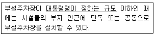
- 주차대수 100대의 규모
- 주차대수 150대의 규모
- 주차대수 200대의 규모
- 주차대수 300대의 규모
(정답률: 67%)
95. 다음 중 교통혼잡 특별관리구역과 특별관리시설물의 설치기준으로 옳지 않은 것은? (단, 혼잡시간대란 일정한 구역을 둘러싼 편도 3차로 이상 도로 중 적어도 1개 이상 도로의 시간대별 평균 통행속도가 시속 10km 미만인 상태를 뜻한다.)
- 교통혼잡 특별관리구역-혼잡시간대가 토ㆍ일요일과 공휴일을 제외한 평일 평균 하루 3회 이상 발생할 것
- 교통혼잡 특별관리구역-혼잡시간대에 그 구역으로 진입ㆍ진출하는 교통량이 해당 도로 한쪽 방향 교통량의 15% 이상을 차지할 것
- 교통혼잡 특별관리시설물 - 시설물이 유발하는 교통량으로 인하여 해당 시설물의 주출입구에 접한 도로의 혼잡시간대가 시설물이 유발하는 교통량이 토ㆍ일요일과 공휴일을 포함한 주 중 가장 많은 날을 기준으로 하루 3회 이상 발생할 것
- 교통혼잡 특별관리시설물-혼잡시간대에 해당 도로를 통하여 시설물로 진입ㆍ진출하는 교통량이 그 도로 한쪽 방향 교통량의 15% 이상일 것
(정답률: 57%)
96. 다음 중 도로교통법규상 횡단보도의 설치기준으로 옳은 것은?
- 지하도로부터 300m 이내에는 설치할 수 없다.
- 육교로부터 200m 이내에는 설치할 수 없다.
- 교차로로부터 400m 이내에는 설치할 수 없다.
- 다른 횡단보도로부터 500m 이내에는 설치할 수 없다.
(정답률: 67%)
97. 다음 중 도로원표의 설치기준에 관한 설명으로 옳지 않은 것은?
- 도로원표는 특별시ㆍ광역시ㆍ시 및 군에 각 1개를 설치하여야 한다.
- 서울특별시 도로원표의 위치는 세종로광장의 중앙으로 한다.
- 도로원표의 크기ㆍ표기방법은 국토해양부령으로 정한다.
- 군의 도로원표의 위치는 군수가 정한다.
(정답률: 19%)
98. 주차장법상 노상주차장의 설비 기준에서 주차대수규모가 최소 몇 대 이상인 경우에는 장애인 전용 주차구획을 1면이상 설치하여야 하는가?
- 10대
- 15대
- 20대
- 30대
(정답률: 57%)
99. 다음 중 교통안전관리자의 종류에 해당하지 않는 것은?
- 도로교통안전관리자
- 선박교통안전관리자
- 항공교통안전관리자
- 삭도교통안전관리자
(정답률: 42%)
100. 시장은 도시교통정비지역 안의 일정한 지역에서 자동차의 운행을 억제하여야 할 필요가 있다고 인정되면 1회에 최대 몇 일 이내의 기간을 정하여 자동차의 운행을 제한할 수 있는가?
- 7일
- 10일
- 15일
- 30일
(정답률: 40%)
6과목: 교통안전
101. 도로의 곡선부에서 원심력을 상쇄하기 위해 편경사를 설치한 것 중 옳은 것은? (단, +는 횡단경사를 높인 부분이고, -는 낮춘 부분을 의미한다.)
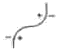
(정답률: 93%)
102. 다음 중 노변방호책의 세 가지 기능적 요소에 해당하지 않는 것은?
- 표준구간
- 끝구간(단부구간)
- 전이구간
- 지주구간
(정답률: 60%)
103. 개선 사업을 시행하기 전 3년 간의 연평균 사고건수가 10건, 연평균 ADT가 6000대인 한 교차로에 사고감소율이 20%인 교통안전사업을 시행한 후 3년 동안에 예측되는 연평균 사고감소 건수는? (단, 이 교차로의 사업시행 후 3년 동안의 연평균 ADT는 9000대로 예측된다.)
- 1건
- 3건
- 5건
- 7건
(정답률: 43%)
104. 다음 중 운전자가 위험상태를 발견하고 브레이크를 밟아야겠다고 판단하면서부터 브레이크 페달을 밟아 브레이크가 작동하기까지 주행한 거리는?
- 주행거리(走行距離)
- 정지거리(停止距離)
- 제동거리(制動距離)
- 공주거리(空走距離)
(정답률: 100%)
1⑤. 교통사고의 유발요인을 인적 요인, 차량 요인, 환경적 요인으로 구분하였을 때, 다음 인적요인에 해당하지 않는 것은?
- 운전자의 취업환경
- 운전자의 적성
- 운전자의 운전습관
- 운전자의 질병
(정답률: 82%)
106. 다음 중 운전자와 교통사고와의 관계에 대한 설명으로 옳지 않은 것은?
- 운잔자의 신체적 특성은 사고 발생과 관계가 없다.
- 운전자교육은 안전한 행동을 하도록 운전자에게 동기를 부여한다.
- 운전자의 연령과 성별에 따라 사고유형이 달라질 수 있다.
- 피로와 졸음은 운전자의 능력을 감소시킨다.
(정답률: 72%)
107. 아래 그림은 교차로 설계시 보호좌회전과 비보호좌회전의 구분 기준을 나타내는 도표다. 다음 중 편도 3차로 도로에서 차량신호기를 비보호좌회전으로 운영할 수 없는 경우는?
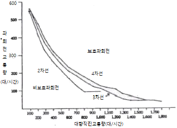
- 대향직진교통량 500대/시간, 좌회전 교통량 200대/시간
- 대향직진교통량 700대/시간, 좌회전 교통량 150대/시간
- 대향직진교통량 900대/시간, 좌회전 교통량 100대/시간
- 대향직진교통량 1200대/시간, 좌회전 교통량 90대/시간
(정답률: 15%)
108. ‘정차’라 함은 운전자가 몇 분을 초과하지 아니하고 차를 정지시키는 것으로서 주차 외의 정지상태를 말하는가?
- 3분
- 5분
- 7분
- 10분
(정답률: 95%)
109. 어느 차량이 단속적으로 10m에 이어 20m의 스키드마크(skidmark)를 남기고 정지하였다. 도로는 평지이고 타이어와 노면의 마찰계수가 0.8일 때 이 차량의 초기 속도는?
- 약 68km/시
- 약 78km/시
- 약 88km/시
- 약 98km/시
(정답률: 43%)
110. 곡선반경 250m인 도로 구간에서 편주현상(yawing)이 일어나 차량이 전복하는 사고가 발생하였다. 편주혼 시작점의 곡선반경은 250m, 편경사는 5%, 횡방향 마찰계수가 0.4일 때, 편주가 시작되는 점에서 이 차량의 주행속도는 얼마인가?
- 약 110.5km/h
- 약 115.5km/h
- 약 119.5km/h
- 약 123.5km/h
(정답률: 63%)
111. 도로 이용자에게 원활한 교통 소통과 교통 안전을 도모하기 위한 정보를 전달하기 위하여 설치하는 교통안전표지의 설치장소를 선정할 때의 유의사항으로 옳지 않은 것은?
- 도로 이용자의 행동 특성을 고려한다.
- 표지의 시인성이 방해되지 않도록 한다.
- 중요한 표지들은 집중해서 설치한다.
- 도로 이용에 장애가 되지 않도록 한다.
(정답률: 93%)
112. 다음 중 노변방호책의 설계 기준으로 옳지 않은 것은?
- 차량을 관통하거나 튀어오르게 하지 않고 차량의 방향을 수정해야 한다.
- 차량이 걸려 전도하거나 튕겨나가지 않아야 한다.
- 차량의 경로나 정지한 지점이 인접차로를 침범하지 않아야 한다.
- 차량이 충돌과 동시에 정지할 수 있도록 하여야 한다.
(정답률: 90%)
113. 구간거리가 12km이고 편도 4차로인 고속도로에서 1년 간 사망사고 3건, 부상사고 12건, 대물피해사고가 20건이 발생하였다. 이 구간의 일평균교통량이 20000대일 때 교통사고 피해정도에 의한 사고율은 얼마인가? (단, 사고 유형별 환산계수는 사망사고=20, 부상사고=5, 대물피해사고=1로 한다.)
- 약 0.77
- 약 1.60
- 약 3.09
- 약 6.18
(정답률: 54%)
114. 다음 중 교통사고 분석의 일반적인 목적으로 옳지 않은 것은?
- 사고 많은 장소를 선별하기 위함이다.
- 사고의 원인을 분석하여 사고방지대챇을 강구하고 사고의 책임을 규명하기 위함이다.
- 사고의 장소 및 시간의 변화에 따른 경험을 비교ㆍ분석하여 국가의 안전정책수립을 위한 기초자료로 활용하기 위함이다.
- 예산획득 및 배정의 우선순위와는 무관하게 소요예산을 책정하는 기초자료로 활용하기 위함이다.
(정답률: 69%)
115. 다음 중 2대 이상의 자동차가 동일한 방향으로 주행하던 중 뒷차가 앞차의 후면을 충격한 사고를 무엇이라 하는가?
- 충돌
- 전도
- 전복
- 추돌
(정답률: 100%)
116. 교통사고가 다발하는 단로부(mid-block)에서 보행자 횡단에 의한 사고를 개선하기 위한 대책으로 옳지 않은 것은?
- 차로폭의 재조정
- 입체횡단시설 설치
- 횡단보도 예고표지 신설
- 마찰계수가 높은 노면포장
(정답률: 79%)
117. 다음 중 미끄럼흔적으로부터 미끄럼거리를 추정하는 기준에 대한 설명으로 옳지 않은 것은?
- 양후륜의 미끄럼흔적들 모두가 전륜의 미끄럼흔적을 벗어나지 않으면 직선미끄럼으로 간주한다.
- 직선미끄럼의 겨우 모든 바퀴들의 미끄럼흔적 중 가장 짧은 것을 미끄럼거리로 한다.
- 양후륜의 미끄럼흔적들이 전륜의 미끄럼 흔적의 어느 한 쪽을 벗어나면 곡선미끄럼으로 간주한다.
- 곡선미끄럼의 경우 미끄럼흔적들의 평균미끄럼거리를 그 차량의 미끄럼거리로 한다.
(정답률: 91%)
118. 다음 중 사고 경험에 기초한 위험지점 선정을 위한 기법으로 모든 규모의 체계와 모든 범위의 교통량에 적용될 수 있으며 사고 발생은 포아송 분포를 따른다는 가정에 기초한 것은?
- 사고율법
- 사고건수법
- 사고건수-율법
- 율-품질관리법
(정답률: 89%)
119. 다음 중 사고지점도에 대한 설명으로 옳지 않은 것은?
- 사고지점도는 통상 일주일 단위로 관리된다.
- 사고가 집중적으로 발생하는 지점의 신속한 시각적 색인을 제공한다.
- 가장 일반적인 지점도는 지도상에 핀, 색종이를 붙이거나 표시를 하여 사고지점을 나타낸다.
- 다수의 희생자(사망 또는 부상)를 포함하는 대형사고에 의한 왜곡을 피하기 위하여 희생자수 대신 사고건수를 나타내는 것이 일반적이다.
(정답률: 85%)
120. 다음 중 도로교통안전을 강화하기 위해 사용하는 3e에 포함되지 않는 것은?
- 교육(Education)
- 공학(Engineering)
- 단속(Enforcement)
- 권장(Encouragement)
(정답률: 86%)
이유는 교통수요추정은 미래의 교통수요를 예측하는 것이기 때문에, 현재의 교통체계가 미래에도 계속 유지될 것이라는 가정은 합리적이지 않다. 따라서 교통수요추정에서는 현재의 교통체계가 변화할 가능성을 고려하여 예측을 수행해야 한다.